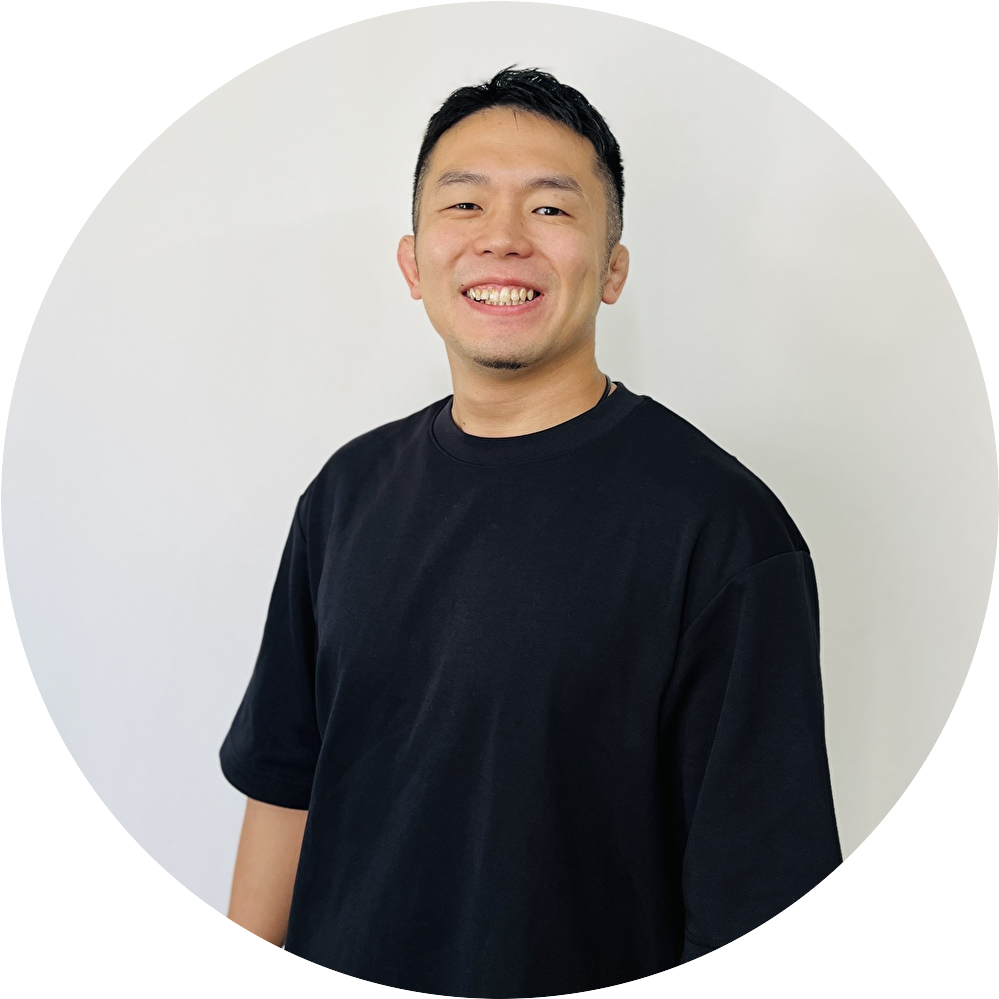

セット間の休憩は「何分が正解」？目的別の目安と、三日坊主さん専門ジムが秒数と同じくらい大切にしていること
「休憩は短く」が"追い込んでる感"の正体？
セット間の休憩について、「休憩は短い方が効く」「長く休むとサボっているみたいで気が引ける」と感じている会員様は少なくありません。実際、次のセットまでの時間を極端に切り詰めて、息が上がったまま次のセットに入るスタイルを"追い込みトレーニング"として好む方もいます。たしかにキツさは感じやすいのですが、それと「トレーニングの効果」は、実はイコールではありません。
まず知っておきたい、目的別の休憩時間の"ベーシックな目安"
トレーニング指導の世界では長年、目的別に休憩時間を使い分けるという考え方が一般的でした。2004年に発表された、指導者に広く読まれてきた総説(Kraemer & Ratamess, 2004)では、「筋力・パワー向上が目的なら2〜5分、筋肥大(体を大きくする)が目的なら30〜90秒程度、筋持久力が目的なら30秒以内」という目安が示されています。今も多くのジムやトレーニング指導で使われている、いわば基本の目安です。まずは自分の目的に応じて、この範囲を意識してみるのは良い出発点になります。
ただし、最近の研究では「秒数に縛られすぎなくていい」ことも分かってきた
とはいえ、この目安を絶対のルールとして守らなければいけないかというと、そうとも言い切れません。2016年に『Journal of Strength and Conditioning Research』誌に掲載された研究(Schoenfeld et al.)では、6ヶ月以上のトレーニング経験がある成人男性21名を対象に、「セット間の休憩を1分にするグループ」と「3分にするグループ」に分け、週3回・8週間、同じトレーニングメニューを行ってもらいました。結果、8週間後、3分休憩グループの方が、1分休憩グループより筋力・筋肉のサイズともに大きく伸びていました。3分休憩グループでは、ベンチプレスの1RM(1回だけ挙げられる最大重量)が12.7%、スクワットの1RMが15.2%向上。筋肉の厚みも、上腕二頭筋で5.4%、大腿前部で13.3%増加しています(1分休憩グループも伸びてはいたものの、いずれの項目でもこれより小さい伸び幅でした)。「筋肥大目的なら30〜90秒」という基本の目安より長めに休んだグループの方が、筋力・筋肥大のどちらも上回ったことになります。
さらに2024年に発表された、より新しいベイズ統計を用いたメタ分析(Schoenfeld et al., 2024, Frontiers in Sports and Active Living)では、複数の研究データをまとめて解析した結果、「60秒を超える休憩の方が、それより短い休憩よりわずかに有利」という傾向は見られたものの、その差自体はかなり小さく、「90秒を超えてさらに休憩を伸ばした場合の追加の効果は、はっきりしなかった」と報告されています。つまり、基本の目安は目安として持っておきつつ、そこから多少外れたとしても、神経質になりすぎる必要はなさそうです。
目的に合った休憩設定は大事。でも三日坊主さん専門ジムが、それと同じくらい大切にしていること
ここまでお伝えしてきた通り、目的に応じて休憩時間の目安を意識することは大切です。ただ、E.Sが休憩時間について、それと同じくらい大切だと考えているのが「決まったメニューを、決めた時間内に終わらせること」です。
理由はシンプルで、会員様の中には、トレーニングに使える時間そのものの優先順位が、必ずしも高くない方も多いからです。仕事や家事、育児などの合間をぬって「今日は45分だけ」という方がほとんどではないでしょうか。そんな中で休憩時間の理想の秒数にこだわりすぎて、トレーニングがどんどん長引いてしまうと、「トレーニングは時間がかかって大変」という印象が積み重なり、それ自体が続けるための足かせになりかねません。
なので、休憩時間の"正解の秒数"を追い求めるよりも先に、「決めたメニューを、決めた時間内でこなせる」休憩設定にすることをおすすめしています。多少、目的別の目安から外れていたとしても、無理なく続けられる時間内に収まる方が、長い目で見ればプラスになりやすいという考え方です。
三日坊主さん専門ジムがおすすめする、休憩時間の目安
これらを踏まえて、E.Sでは次のような目安をおすすめしています。
- スクワットやベンチプレスなど、複数の関節・筋肉を同時に使う種目:2〜3分
- カールなど、1つの関節だけを動かす種目:1〜2分
- まず「今日のトレーニング全体で使える時間」を先に決めておき、その範囲に収まるよう休憩を調整する
- 呼吸が落ち着き、次のセットも同じくらいの重さ・回数でこなせそうだと感じたら再開
タイマーで区切るのが苦手な方は、スマホのタイマーを"トレーナー役"にしてしまうのも一つの方法です。時間が来たら次のセットに入る、という決め事にしておくと、なんとなく休憩が長引くのを防げます。
まとめ：秒数の正解を探すより、続けられる時間に収める
目的別の休憩時間の目安は、トレーニングを考える上での良い出発点になります。ただ、最近の研究が示す通り、その秒数に神経質になりすぎる必要はありません。それよりも三日坊主さんにとって大切なのは、「決まったメニューを、決めた時間内で終えられる」ことです。休憩時間は、サボりでも正解探しの対象でもなく、続けられるトレーニングを作るための調整弁だと考えて、自分に合った長さを見つけていきましょう。
出典・参考文献
- Schoenfeld BJ, et al. (2016) "Longer Interset Rest Periods Enhance Muscle Strength and Hypertrophy in Resistance-Trained Men." Journal of Strength and Conditioning Research, 30(7), 1805-1812.
- Schoenfeld BJ, et al. (2024) "Give it a rest: a systematic review with Bayesian meta-analysis on the effect of inter-set rest interval duration on muscle hypertrophy." Frontiers in Sports and Active Living, 6, Article 1429789.
- Kraemer WJ, Ratamess NA (2004) "Fundamentals of Resistance Training: Progression and Exercise Prescription." Medicine & Science in Sports & Exercise, 36(4), 674-688.

実は自分自身も継続が苦手で、何度も挫折した経験があります。だからこそ「続けることの難しさ」がよくわかります。無理のない習慣化を一緒に目指しましょう。